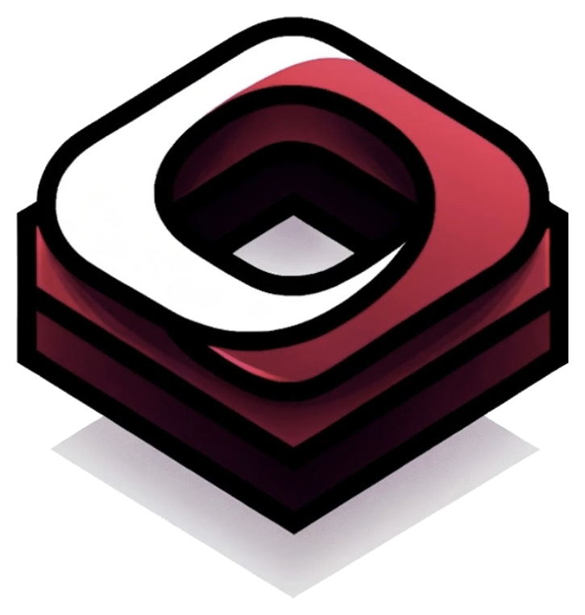

概念不只是概念
先把项目的“可讲性”提炼出来：目标场景、技术亮点、用户体验和最终展示画面同步设计。

BoxTech Research & InnovationVR / AR / XR · Hardware · Interaction · AI Vision
BoxTech 专注把抽象概念推进为可演示、可测试、可迭代的高完成度原型系统，让科研想法、产业需求和学生创新项目快速进入真实体验阶段。
Immersive Technology
从概念验证到硬件集成，从交互体验到实验系统，打造能展示、能测试、能继续迭代的技术样机。
BoxTech Lab OS
我们擅长把“想做一个交互 Demo”升级成完整技术叙事：有视觉冲击、有硬件触感、有 AI 感知、有实验逻辑，也有能说服观众的展示节奏。
XR · AI Vision · Hardware · Research Delivery
先把项目的“可讲性”提炼出来：目标场景、技术亮点、用户体验和最终展示画面同步设计。
用手势、空间、传感器、视觉识别和实时反馈，让系统看起来像真正的未来界面。
把设备、结构、传感器和软件流程整合到同一体验里，让原型有真实触感和可信度。
围绕汇报、展厅、竞赛和实验现场设计演示路径，让观众快速理解“它为什么厉害”。
Our Expertise
BoxTech 覆盖体验端、设备端、算法端和研究端，适合需要“看起来高级、跑起来稳定、讲起来有技术深度”的项目。
沉浸式训练、空间叙事、虚拟实验、交互研究和可展示的 XR 应用。
触控、手势、空间定位、传感器输入和多模态交互流程设计。
嵌入式硬件、传感器电路、结构验证、设备联调和样机迭代。
图像识别、目标跟踪、视觉分析、AI 辅助感知和智能反馈系统。
实验设计、用户测试、技术报告、论文图示和项目展示材料支持。
Technology Platform
我们把 XR 场景、硬件输入、AI 视觉和实验记录拆成可组合模块，减少从零搭系统的时间，把精力集中在创新点本身。
用于搭建训练、展示、仿真和实验场景，强调沉浸感、交互反馈和演示稳定性。
把手势、触控、位置、姿态和外部硬件输入统一为可调用的交互事件。
把识别、跟踪、分析和可视化串起来，让系统具备“看见并理解”的能力。
交付 Demo、实验说明、技术路线、展示素材和下一阶段迭代建议。
Collaboration Opportunities
无论是课题验证、行业展示、竞赛冲刺还是实验平台建设，我们都可以把项目包装成更完整、更专业、更容易被理解的技术成果。
联合课题、实验平台、沉浸式研究工具、用户测试流程和数据采集系统。
产品概念验证、工业原型测试、展厅 Demo、培训系统和场景化交互方案。
竞赛项目支持、课程原型指导、技术路线评估、答辩展示和材料包装。
从一个想法到可运行样机，完成硬件、软件、交互、视觉和演示流程集成。
What We Deliver
具备完整体验路径、稳定演示状态和清晰视觉表达，适合汇报、路演、开放日或展厅展示。
硬件、软件、交互和接口保留扩展空间，后续可以继续做实验、改功能、接新设备。
提供系统结构、技术路线、测试方案、结果说明和可用于报告/论文/申请书的表达素材。
Signature Output
BoxTech 的价值不是“写几段代码”，而是把技术、视觉、交互和叙事整合到一个完整成果里，让项目一眼看上去就更专业。
把项目讲成清晰的未来场景：为什么做、解决什么、技术亮点在哪里、观众应该看什么。
界面、硬件、交互、反馈、动效和灯光感统一，避免“能跑但很简陋”的 Demo 气质。
保留实验记录、测试流程、技术结构和可复用材料，让成果可以继续写报告、做申请或推进论文。
围绕真实展示环境准备演示流程、容错方案和讲解节奏，让系统在关键时刻稳得住。
Delivery Flow
我们把项目拆成目标定义、核心验证、系统集成和展示包装四个阶段，持续压缩不确定性。
明确场景、目标用户、技术亮点、展示重点和最小可行路径。
优先搭建最关键的交互、硬件连接、视觉算法和系统闭环。
整合 UI、动效、设备稳定性、异常处理和现场演示流程。
准备展示脚本、测试记录、技术文档和下一阶段迭代建议。